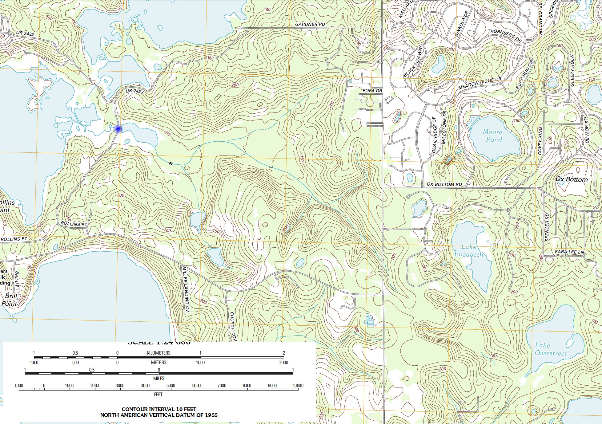
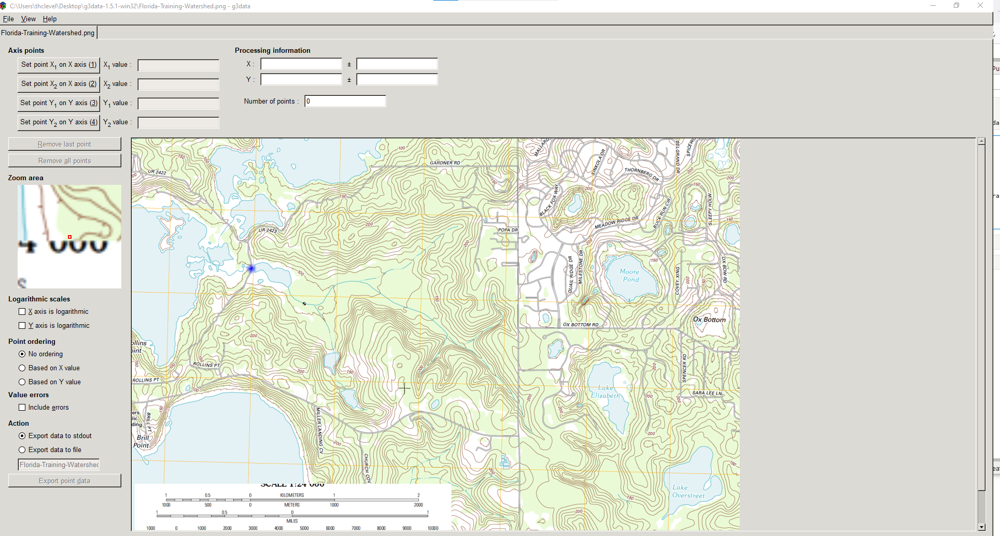
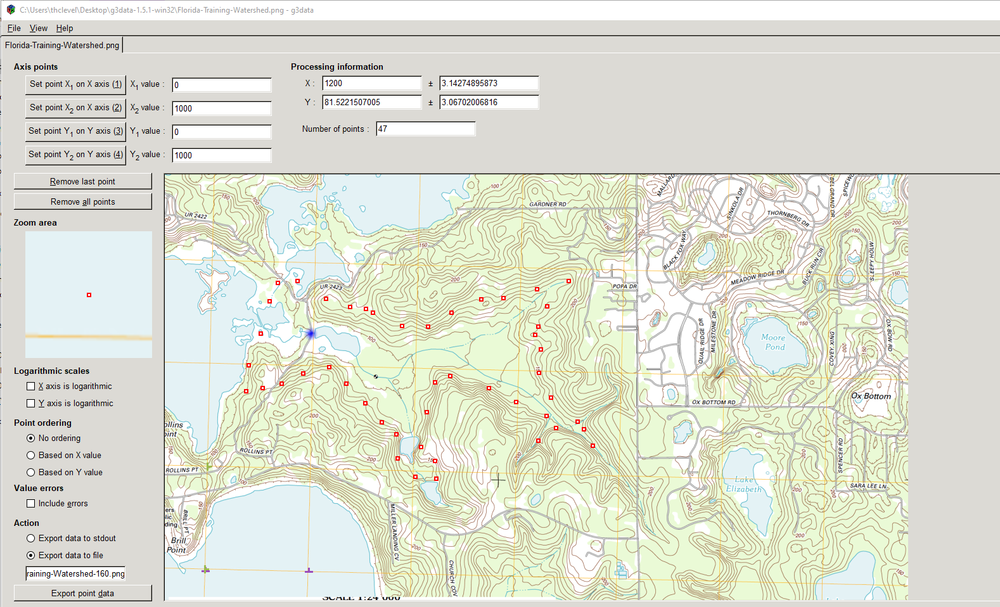

Delineation (Homebrew DEM)¶
This method really refers to making your own DEM form a contour map then running python scripts to help identify the boundary.
Example using Florida Training Watershed¶
Consider the image below, the point of interest is the blue dot.

To find the watershed boundary we can digitize the contours, then use a particle tracking algorithm to find points that drain to the blue dot (or close to the blue dot).
Digitize using G3DATA or something similar to get XY coordinates of the level sets (contours) Here is the graphic loaded into G3DATA.

Next digitize some of the contours (should do all, but that takes too much time to illustrate).
Here is the manual digitize of the 160 contour line:

Collect the Data¶
A small sample of the exported files is
X-Easting Y-Northing Z-Elevation
662.0918525 3772.927975 90.0
567.9050539 3733.188964 90.0
480.271114 3645.751891 90.0
541.243637 3540.990522 90.0
540.3155497 3376.072222 90.0
581.2638862 3228.225103 90.0
... many rows ...
492.1393818 2997.131367 100.0
364.2602019 3030.964367 100.0
225.1033552 3091.093174 100.0
75.79379588 3134.994516 100.0
-96.07109711 3231.487471 100.0
-238.8277976 3227.69075 100.0
-353.7418792 3171.443035 100.0
-458.0813904 3115.476559 100.0
2181.961358 1121.860674 150.0
2059.510082 1150.518885 150.0
2066.70979 1278.369941 150.0
... many rows ...
Next check the contours against original image:
# CCMR from ENGR-1330:
# http://54.243.252.9/engr-1330-webroot/8-Labs/Lab07/Lab07.html
# https://clouds.eos.ubc.ca/~phil/docs/problem_solving/06-Plotting-with-Matplotlib/06.14-Contour-Plots.html
# https://docs.scipy.org/doc/scipy/reference/generated/scipy.interpolate.griddata.html
# https://stackoverflow.com/questions/332289/how-do-you-change-the-size-of-figures-drawn-with-matplotlib
# https://stackoverflow.com/questions/18730044/converting-two-lists-into-a-matrix
# https://stackoverflow.com/questions/3242382/interpolation-over-an-irregular-grid
# https://stackoverflow.com/questions/33919875/interpolate-irregular-3d-data-from-a-xyz-file-to-a-regular-grid
import pandas
my_xyz = pandas.read_csv('Florida-Training-Watershed-LevelSets.dat',sep='\t') # read an ascii file already prepared, delimiter is tabs
#my_xyz = pandas.read_csv('XYZSomewhereUSA.txt',sep=' ') # read an ascii file already prepared, delimiter is tabs
my_xyz = pandas.DataFrame(my_xyz) # convert into a data frame
#print(my_xyz) #examine the dataframe
import numpy
import matplotlib.pyplot
from scipy.interpolate import griddata
# extract lists from the dataframe
coord_x = my_xyz['X-Easting'].values.tolist()
coord_y = my_xyz['Y-Northing'].values.tolist()
coord_z = my_xyz['Z-Elevation'].values.tolist()
coord_xy = numpy.column_stack((coord_x, coord_y))
# Set plotting range in original data units
lon = numpy.linspace(min(coord_x), max(coord_x), 40)
lat = numpy.linspace(min(coord_y), max(coord_y), 40)
X, Y = numpy.meshgrid(lon, lat)
# Grid the data; use cubic spline interpolation (other choices are nearest and linear)
Z = griddata(numpy.array(coord_xy), numpy.array(coord_z), (X, Y), method='cubic', fill_value = 'nan')
# Build the map
print("Indices of black box on overlay below:")
ixl = 2
ixh = 38
iyl = 2
iyh = 38
#print("x",X)
#print("y",Y)
#print("z",Z)
print("xyz lower left corner ",X[iyl][ixl],Y[iyl][ixl],Z[iyl][ixl])
print("xyz lower right corner",X[iyl][ixh],Y[iyl][ixh],Z[iyl][ixh])
print("xyz upper left corner ",X[iyh][ixl],Y[iyh][ixl],Z[iyh][ixl])
print("xyz upper right corner ",X[iyh][ixh],Y[iyh][ixh],Z[iyh][ixh])
xxl = X[iyl][ixl]
xxh = X[iyh][ixh]
yyl = Y[iyl][ixl]
yyh = Y[iyh][ixh]
flag=True
if flag:
matplotlib.pyplot.rcParams["figure.figsize"] = [10.00, 8.00]
matplotlib.pyplot.rcParams["figure.autolayout"] = True
im = matplotlib.pyplot.imread("Florida-Training-Watershed.png") # base image
fig, ax = matplotlib.pyplot.subplots()
if flag:
im = ax.imshow(im, extent=[-400, 6500, -1100, 3800])# sets X and Y plot window of basemap
#fig.set_size_inches(14, 7)
levels=[50,100,150,200]
CS = ax.contour(X, Y, Z, levels, linewidths=2)
ax.clabel(CS, inline=2, fontsize=7)
ax.set_title('Contour Plot from Gridded Data File')
#ax.set_xlim([0,1000])
#ax.set_ylim([0,800])
ax.plot([xxl,xxh],[yyl,yyl],color="black")
ax.plot([xxl,xxh],[yyh,yyh],color="black")
ax.plot([xxl,xxl],[yyl,yyh],color="black")
ax.plot([xxh,xxh],[yyl,yyh],color="black");
Indices of black box on overlay below:
xyz lower left corner -211.11642335384613 -350.0720763769231 nan
xyz lower right corner 4234.252983476923 -350.0720763769231 nan
xyz upper left corner -211.11642335384613 3800.749680638461 145.10477989455964
xyz upper right corner 4234.252983476923 3800.749680638461 nan
Not terrible, good enough to illustrate next step - we do need to find the blue dot in the arbitrary coordinates - looks to be at 900,2300 or close.
Conductivity = 0.5 # feet/day
Porosity = 1.0 # voids/bulk
nrows = iyh - iyl
ncols = ixh - ixl
#Zero vectors for the velocity fields
U = [[0 for j in range(ncols)] for i in range(nrows)]
V = [[0 for j in range(ncols)] for i in range(nrows)]
#Zero vectors for realinged mesh grid
XG = [[0 for j in range(ncols)] for i in range(nrows)]
YG = [[0 for j in range(ncols)] for i in range(nrows)]
for j in range(ncols):
for i in range(nrows): #range(nrows)
U[i][j] = -1.0*(Conductivity/Porosity)*(Z[iyl+i][ixl+j]-Z[iyl+i][ixl+j-1])/(X[iyl+i][ixl+j]-X[iyl+i][ixl+j-1]) #- K dh/dx
V[i][j] = -1.0*(Conductivity/Porosity)*(Z[iyl+i][ixl+j]-Z[iyl+i-1][ixl+j])/(Y[iyl+i][ixl+j]-Y[iyl+i-1][ixl+j]) #- K dh/dy
XG[i][j] = X[iyl+i][ixl+j]
YG[i][j] = Y[iyl+i][ixl+j]
# convert to numpy arrays
UU = numpy.asarray(U)
VV = numpy.asarray(V)
XX = numpy.asarray(XG)
YY = numpy.asarray(YG)
UU[30][30]
-0.010984096454629564
if flag:
matplotlib.pyplot.rcParams["figure.figsize"] = [10.00, 8.00]
matplotlib.pyplot.rcParams["figure.autolayout"] = True
im = matplotlib.pyplot.imread("Florida-Training-Watershed.png") # base image
fig, ax = matplotlib.pyplot.subplots()
if flag:
im = ax.imshow(im, extent=[-400, 6500, -1100, 3800])# sets X and Y plot window of basemap
#fig.set_size_inches(14, 7)
levels=[50,100,150,200]
CS = ax.quiver(XX[::1, ::1], YY[::1, ::1], UU[::1, ::1], VV[::1, ::1], units='width')
#ax.clabel(CS, inline=2, fontsize=12)
ax.set_title('Vector Plot from Gridded Data File')
#ax.set_xlim([0,1000])
#ax.set_ylim([0,800]);
ax.plot([xxl,xxh],[yyl,yyl],color="black")
ax.plot([xxl,xxh],[yyh,yyh],color="black")
ax.plot([xxl,xxl],[yyl,yyh],color="black")
ax.plot([xxh,xxh],[yyl,yyh],color="black");
This gives a useful clue to watershed boundary, the vector plot shows water flow pathways. we can also try a streamline plot.
if flag:
matplotlib.pyplot.rcParams["figure.figsize"] = [10.00, 8.00]
matplotlib.pyplot.rcParams["figure.autolayout"] = True
im = matplotlib.pyplot.imread("Florida-Training-Watershed.png") # base image
fig, ax = matplotlib.pyplot.subplots()
if flag:
im = ax.imshow(im, extent=[-400, 6500, -1100, 3800])# sets X and Y plot window of basemap
#fig.set_size_inches(14, 7)
levels=[50,100,150,200]
CS = ax.streamplot(XX, YY, UU, VV, density=0.8, linewidth=1, color=None, arrowsize=1)
#ax.clabel(CS, inline=2, fontsize=12)
ax.set_title('Streamline Plot from Gridded Data File')
#ax.set_xlim([0,1000])
#ax.set_ylim([0,800]);
ax.plot([xxl,xxh],[yyl,yyl],color="black")
ax.plot([xxl,xxh],[yyh,yyh],color="black")
ax.plot([xxl,xxl],[yyl,yyh],color="black")
ax.plot([xxh,xxh],[yyl,yyh],color="black");
Finally can consider particle tracks to find boundary
# U array x-velocity at XG,YG
# V array y-velocity at XG,YG
# XG array X-value of cell center
# YG array Y-value of cell center
# XP X-value of particle position
# YP Y-value of particle position
# UP x-velocity of particle
# VP y-velocity of particle
# TX x-component particle trajectory
# TY y-component particle trajectory
import math
verbose=False
terse=False
deltaT = 2000
etime = 0
numTime = 500
XP = []
YP = []
UP = []
VP = []
TX = [] #trajectory vector
TY = []
np = 1 # Total particles
XP.append(1500)
YP.append(1500)
UP.append(0)
VP.append(0)
ip=np-1
print(" Initial Particle Position",round(XP[ip],2),round(YP[ip],2),round(UP[ip],2),round(VP[ip],2),round(etime,2))
# move particles this time step
for it in range(numTime):
for ip in range(np):
# Build Particle Distance Table
dist = []
index = []
count = 0
for j in range(ncols):
for i in range(nrows): #range(nrows)
dist.append(math.sqrt((XX[i][j]-XP[ip])**2 + (YY[i][j]-YP[ip])**2))
index.append([count,i,j]) # use to find i,j for a given index
count = count +1
# find closest cell
for i in range(count):
if dist[i] <= min(dist):
#print(index[i],dist[i])
ixx=index[i][1]
jyy=index[i][2]
# use nearest cell assignment - aka simple scheme
UP[ip] = UU[ixx][jyy]
VP[ip] = VV[ixx][jyy]
if verbose: print("Particle Position and Velocities Before Move",round(XP[ip],2),round(YP[ip],2),round(UP[ip],2),round(VP[ip],2),round(etime,2))
break #exits the loop - we stop at the first nearest cell encountered
# move the particle
XP[ip]=XP[ip]+UP[ip]*deltaT
YP[ip]=YP[ip]+VP[ip]*deltaT
etime=etime+deltaT
if terse: print(" Particle Position and Velocities After Move",round(XP[ip],2),round(YP[ip],2),round(UP[ip],2),round(VP[ip],2),round(etime,2))
TX.append([ip,XP[ip],etime])
TY.append([ip,YP[ip],etime])
Initial Particle Position 1500 1500 0 0 0
if flag:
matplotlib.pyplot.rcParams["figure.figsize"] = [10.00, 8.00]
matplotlib.pyplot.rcParams["figure.autolayout"] = True
im = matplotlib.pyplot.imread("Florida-Training-Watershed.png") # base image
fig, ax = matplotlib.pyplot.subplots()
if flag:
im = ax.imshow(im, extent=[-400, 6500, -1100, 3800])# sets X and Y plot window of basemap
#fig.set_size_inches(14, 7)
levels=[50,100,150,200]
CS = ax.quiver(XX[::1, ::1], YY[::1, ::1], UU[::1, ::1], VV[::1, ::1], units='width')
#ax.clabel(CS, inline=2, fontsize=12)
ax.set_title('Vector Plot from Gridded Data File\n' +\
'Each Marker is ' + str(deltaT) + ' days\n' +\
'Total Time is ' + str(etime) + ' days')
#ax.set_xlim([0,1000])
#ax.set_ylim([0,800]);
ax.plot([xxl,xxh],[yyl,yyl],color="black")
ax.plot([xxl,xxh],[yyh,yyh],color="black")
ax.plot([xxl,xxl],[yyl,yyh],color="black")
ax.plot([xxh,xxh],[yyl,yyh],color="black")
xtrajectory = [sublist[1] for sublist in TX]
ytrajectory = [sublist[1] for sublist in TY]
ax.plot(xtrajectory[0],ytrajectory[0],marker="o",color="blue",markersize=12)
ax.plot(xtrajectory,ytrajectory,marker="o",color="red")
;
''